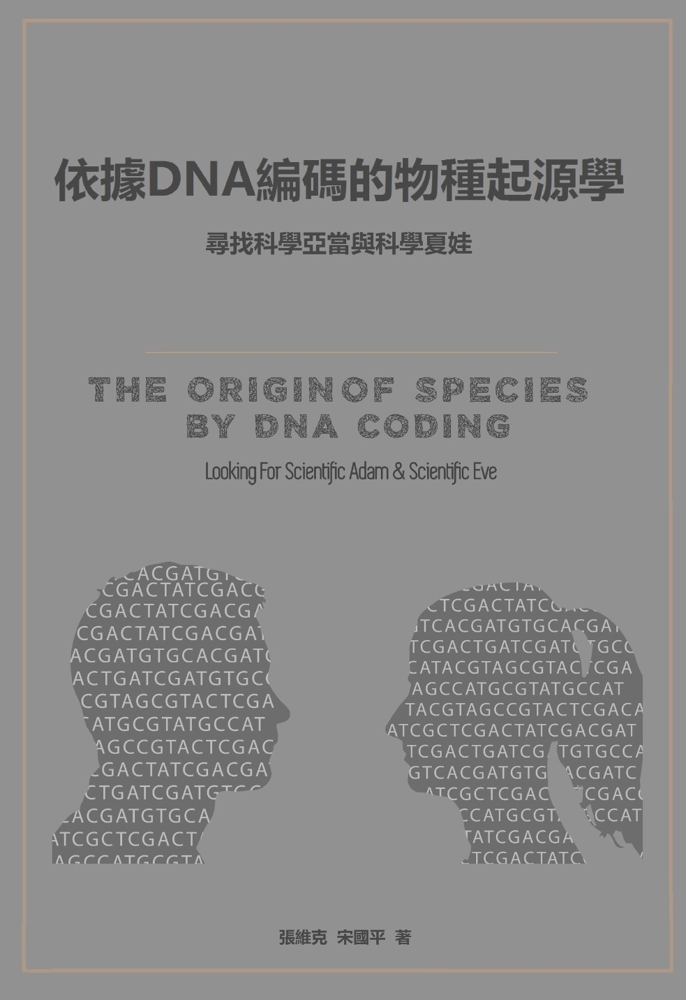

|  | |||||||||
|
本書與達爾文的《物種起源》有相同的目的：都是爲了追尋生命的起源。 所不同的是，達爾文是從骨頭、化石、形體、動作、尺寸比較追尋親緣關係。這就像台灣早年的一檔綜藝節目《超級明星臉》，讓長得像明星的嘉賓上臺，由觀衆評分，以高“相似度”取勝。長得像一家人，但不是一家人，只能娛樂而已。達爾文的《物種起源》就是《超級明星臉》似的尋找和結果。 本書是按照“DNA親子鑒定”的原理：從DNA編碼的解碼和數學分析追尋親緣關係。也就是用今天已經普及的“DNA親子鑒定”方法追尋到人類第一個祖先。同樣方法也可以追尋動物、植物的起源。 “DNA親子鑒定”和“超級明星臉”尋找生命起源，請問，你會相信誰呢？當您讀完本書全部内容，就會發現這裏沒有高深的理論，只有人類血液中DNA編碼存在的事實。引用的生物學理論主要是染色體數目、減數分裂和突變。證實全世界人的DNA編碼來自唯一的一個源頭：一個男人的DNA編碼！這個令人難以置信的結論，僅僅是依據高中的數學和來自基因銀行（GenBank）的編碼得到的。 如果您相信進化論，應該看這本書，就知道進化論只是僞科學。如果您不相信進化論，也應該看這本書，會知道爲什麽進化論是僞科學。令人驚嘆的是DNA科學結論和聖經記載如此的完美一致！ 《依據DNA編碼的物種起源—尋找科學亞當與科學夏娃》全書目錄： 引言：那些從DNA去追尋我們祖先的科學，您知道多少？ 導讀1：DNA編碼是人類遺傳信息的唯一載體 第1節 生命遺傳信息的發現 第2節 兩個類型的生命遺傳信息 第3節 從DNA編碼上能看到些什麼 ？ 導讀2：我們憑着什麼傾覆進化論？ 第1節 是DNA 編碼序列終結了進化論 第2節 人和黑猩猩共祖的理論完全是虛假的設想 第3節 DNA包含信息之浩瀚VS.進化論在認識上之膚淺 第4節 依據DNA編碼，用數學計算出來的“物種起源” 第5節 “D後生物學”VS.“D前生物學” 第一章 人類學研究的DNA解碼時代 第1節 人類學研究的DNA解碼時代來臨 第2節 分子人類學的研究方向和發展 第二章 尋找科學亞當和科學夏娃 第1節 尋找Y染色體亞當 第2節 尋找線粒體夏娃 第3節 誰是線粒體夏娃的夫君? 第4節 唯一的一對父母—科學亞當和科學夏娃 第三章 跨越千年的DNA線索追尋 第1節 尋找俄國的lastPrincess 第2節 美國第三位總統私生子疑案 第3節 尋找中國宰相曹操的Y染色體 第4節 尋找Y染色體亞倫 第5節 每一個人都是父系樹和母系樹上的一片樹葉 第四章 誰是亞洲人、歐洲人的祖先 第1節 現代人類學確定年代的方法 第2節 誰是亞洲人的祖先？ 第3節 誰是歐洲人的祖先？ 第4節 尼安德特人不是歐洲人的祖先 第五章 從伊甸園走向世界 第1節 走出非洲 第2節 神奇的澳大利亞之旅 第3節 走入美洲 第六章 DNA解碼的鑰匙：P公式（DNA骰子理論） 第1節 常染色體上標記的重要意義 第2節 人類常染色體DNA中的“第一標記” 第3節 減數分裂和“第一標記”的承傳 第4節 科學夏娃只可能出於科學亞當 第5節 什麼是人？ 第七章 染色體數目的差異是猿進化成人的鴻溝 第1節 人類是由進化產生的論點 第2節 驟變產生“23對染色體人的始祖”的假說 第3節 22對染色體的人會取代23對染色體的人們嗎? 第八章 人和黑猩猩真的共祖嗎？ 第1節 人和黑猩猩DNA98.77%相似的結論是如何得來的？ 第2節 是誰證明了人和黑猩猩是共祖的？ 第3節 人與黑猩猩有83%的基因存在着差異 第4節 DNA解碼不支持人和黑猩猩共祖 第5節 對"上帝的語言"書中"人和黑猩猩真的共祖"的質疑 第九章 DNA的編碼終結了進化論 第1節 我們都是DNA編碼編織出的人 第2節 唯一亞當理論：全世界的人出自一位男子 第3節 驟變論 VS. 進化論 第4節 進化論對人類學研究造成了巨大的混亂 第5節 消除進化論在各方面帶來的影響 第十章 DNA編碼與解碼之物種起源學 第1節 尋找物種的起源 第2節 染色體對數的差異與物種的各從其類 第3節 鰻魚和小麥的故事 第4節 DNA編碼確立了“物種各從其類” 第5節 新的物種起源學—“依據DNA編碼之物種起源學說” 第6節 "染色體差異的鴻溝"對壘"達爾文的羅威納犬"道金斯 第十一章 染色體的恆定性與活化石 第1節 DNA、染色體和線粒體 第2節 DNA、染色體和生命的歷程 第3節 DNA解碼下的活化石 第4節 活化石是否定進化論的又一有力的物證 第5節 再論減數分裂 第十二章 跟隨DNA編碼的現代科學,走出進化論的迷失 第1節 漸進進化的臆想無法跨越染色體數目差異的鴻溝 第2節 相近的DNA編碼片段不能證明有共同的祖先 第3節 進化論迷失的形成與破產 附錄：來自GenBank的生物DNA編碼資料 |
|||||||||